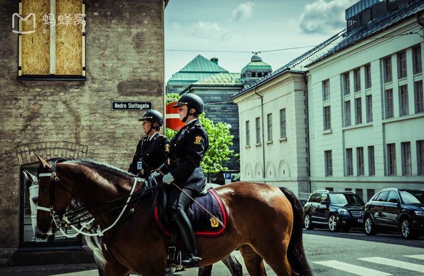
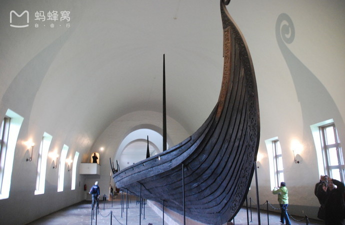
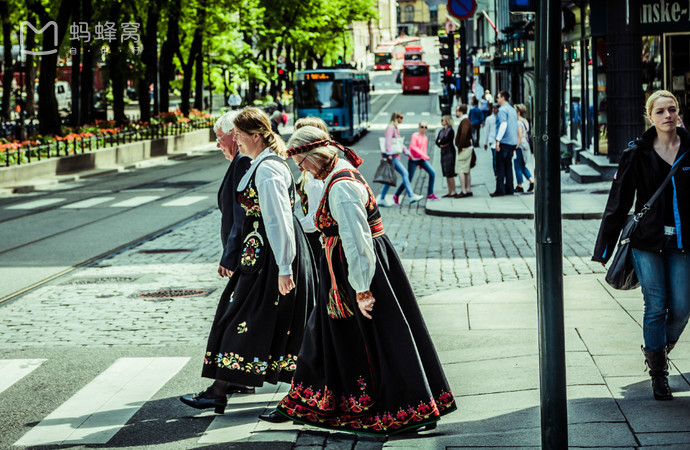
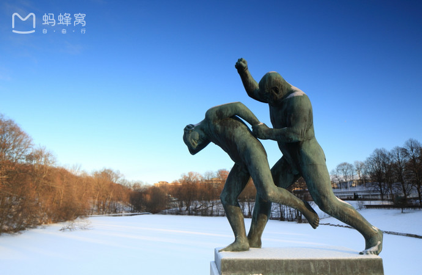

- 
- 
- 
- 
奥斯陆是挪威的首都，斯堪的纳维亚半岛上最为古老的都城。它的名字来源于古老的挪威语，一个是“神”一个是“草地”。
奥斯陆地处国土东南部奥斯陆峡湾的最北端，由于三面被群山、丛林和原野所环抱，因而既有海滨城市的旖旎风光，又有依托高山密林而具有的雄浑气势。
奥斯陆冬季非常寒冷，需要多穿衣服，即便是夏季，晚上也会感到冷意。
在奥斯陆，我们可以闲逛博物馆半岛，领略探险家风采。也可以在维格兰雕塑公园感受一生。
漫步在奥斯陆的大街小巷，你会发现很多细节，很有人情味，体现了这座城市对人的关怀与尊重。